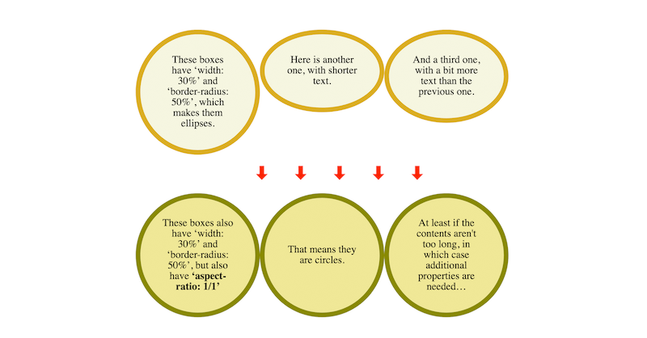

Another @w3CAB election is starting, with 8 candidates for 5 seats. https://twitter.com/w3c/status/1257283714846949376
The 8 candidates are: @t (@mozilla), Heejin Chung (@Samsung), @KHoeckner (@hggezwitscher), Tatsuya Igarashi (@Sony), @frivoal (W3C Invited Expert), @TzviyaSiegman (@wileyglobal), @daithesong (@Apple) and @alanstearns (@Adobe).
https://twitter.com/w3cdevs/status/1257294594846441472They have published their nomination statements at: https://www.w3.org/2020/05/04-ab-nominations.html
https://twitter.com/w3cdevs/status/1257294599724425221Should you need it, a reminder of what the @w3CAB is: https://twitter.com/w3cdevs/status/991733862685437953
https://twitter.com/w3cdevs/status/12572946018299207685-7 May: @w3c supports the #XR Immersive Enterprise online event @XR_Intelligence - unlocking the potential of VR & AR/MR together #XR2020 #ReutersEvents #XR. Free registration: https://events.vr-intelligence.com/enterprise/
🗓️ May@VirtualW3C: remote @w3c Member meeting and @w3cx courses - https://www.w3.org/participate/eventscal.html
https://twitter.com/w3cdevs/status/125731292546887680718-19 May: @w3c convenes its members representatives and staff to a 2-day virtual meeting. Live sessions are dedicated to discussion and Q&A.
https://twitter.com/w3cdevs/status/125731292913889690420 May: @sabouzah opens the Siteimprove Accessibility Day webinar. This online event is dedicated to digital #accessibility #a11y https://siteimprove.com/de-de/accessibility-day/
https://twitter.com/w3cdevs/status/125731293279211930119 May: Join a new run of @w3cx "#CSS Basics" course #MOOC @edXOnline
https://www.edx.org/course/css-basics
https://twitter.com/w3cdevs/status/1257312930934079496The #WebStandard WCAG 2.1 가 한국어로 번역되었습니다 #a11y #WCAG21 http://www.kwacc.or.kr/WAI/wcag21/ https://twitter.com/w3c/status/1257938238326689793
https://twitter.com/w3cdevs/status/1257954443728953344The @csswg has published "CSS Box Sizing Module - Level 4" as first public working draft. This module extends the #CSS sizing properties.
https://drafts.csswg.org/css-sizing-4/
CSS has different ways to size boxes. Paragraphs are as wide as their container, floats are as wide as their content. To get a paragraph no wider than its content, you can make it a float or a table. But that has side-effects
https://twitter.com/w3cdevs/status/1264859799008751621So, after #CSS Sizing Level 3 which let a paragraph be sized as if it were a float, Level 4 will allow a float to be sized as a paragraph. And it will solve another hard problem: link the height of a box to its width (aspect ratio).
https://twitter.com/w3cdevs/status/1264859802917900291The recently published @w3c "Web of Things (WoT) Architecture" #WebStandard has been translated into Japanese: http://www.asahi-net.or.jp/~ax2s-kmtn/internet/wot/REC-wot-architecture-20200409.html #html5j #dotHTML5 #w3c_keio @wot #Translation https://twitter.com/omnidirect/status/1264881747625250816
https://twitter.com/w3cdevs/status/1265123150607548416